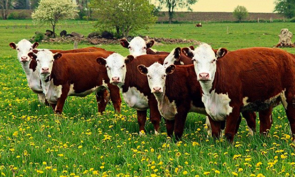

Intro
Original
Chocolate
Strawberry
Chocolate Cows
When you're craving chocolate and milk! You can have them together!

Diet
Hershey's bar
cacao beans
chocolate chips
sugar
syrup
Hot Chocolate Pancakes
combine milk, egg, and butter; whisk until blended
combine flour, chocolate milk, sugar, baking soda and salt; mix
stir...
add two mixtures together and whisk
cook 1-2 minutes on pan
done!